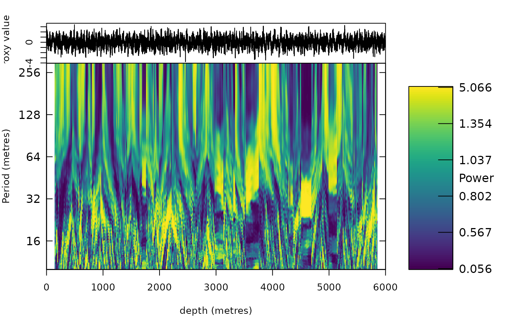

Chirp-matched evolutive harmonic analysis (de-chirped windowed multitaper spectra)
Source:R/analyse_chirp_eha.R, R/zzz_aliases_american.R
analyse_chirp_eha.RdEvolutive harmonic analysis (sliding-window multitaper spectra with the harmonic F-test, Thomson 1982; Meyers
2012) in which, in every window, the depth axis is first warped by a linear change of the sedimentation rate so
that cycles whose period changes along the window become lines again. Within a window of length window the
rate is modelled as r(z) = r0 (1 + g (z - z0)); the warped coordinate u = ln(1 + g (z - z0)) / g makes a cycle of
fixed duration stationary in u, with the period it has at the window centre z0. For every window a grid of
relative rate gradients chirp (g, per depth unit) is tried, and the gradient that concentrates the spectrum
most (lowest Renyi entropy of the whitened power in the analysed period band, or the largest total F-test) is
kept. The result is a period-depth map in which each cycle appears as a sharp line that moves with the
sedimentation rate, plus the gradient itself (chirp), an independent estimate of where and how fast the
rate changes.
Usage
analyse_chirp_eha(
data,
window = NULL,
step = NULL,
chirp = seq(-0.05, 0.05, by = 0.005),
nw = 3,
k = NULL,
lowerPeriod = NULL,
upperPeriod = NULL,
dj = 1/50,
band = NULL,
criterion = c("ftest", "template", "peak", "entropy"),
astro_periods = NULL,
sedrate = NULL,
smooth_chirp = NULL,
steer = NULL,
pad = 8,
detrend = TRUE,
continuum = c("lowess", "median"),
verbose = FALSE
)
analyze_chirp_eha(
data,
window = NULL,
step = NULL,
chirp = seq(-0.05, 0.05, by = 0.005),
nw = 3,
k = NULL,
lowerPeriod = NULL,
upperPeriod = NULL,
dj = 1/50,
band = NULL,
criterion = c("ftest", "template", "peak", "entropy"),
astro_periods = NULL,
sedrate = NULL,
smooth_chirp = NULL,
steer = NULL,
pad = 8,
detrend = TRUE,
continuum = c("lowess", "median"),
verbose = FALSE
)Arguments
- data
Input record in the depth domain: a matrix or data frame with depth in column 1 and the proxy value in column 2 (further columns are ignored). Incomplete rows are removed, the rows are sorted, the record is interpolated to the median depth spacing and standardised. Required, no default.
- window
Length of the moving window in depth units (numeric, > 0), or several lengths (numeric vector), whose template scores are then averaged (short windows resolve abrupt changes, long ones resolve the lines; the longest window is returned for display). A window should hold 15-25 cycles of the cycles that carry the evidence and be shorter than the scale over which the rate changes.
NULLis only allowed withcriterion="template"and givenastro_periodsandsedrate: windows of about 12 and 25 cycles of the shortest cycle at the geometric mean ofsedrate.Default=NULL.- step
Distance between successive window centres in depth units (numeric, > 0);
NULLuseswindow / 20(of the shortest window).Default=NULL.- chirp
Relative rate gradients g = (dr/dz) / r at the window centre that are tried, per depth unit (numeric vector; 0 is the ordinary EHA, gradients at which the rate would reach zero inside the window are skipped).
"auto"(withcriterion="template",astro_periodsandsedrate) uses 25 values up to a factor 3 change of the rate within the longest window.Default=seq(-0.05, 0.05, by = 0.005).- nw
Time-bandwidth product of the multitaper spectra (numeric, > 0, typically 2 to 4); larger values give smoother spectra with a coarser period resolution.
Default=3.- k
Number of Slepian (DPSS) tapers (integer, >= 2, at most
2 * nw - 1);NULLuses2 * nw - 1.Default=NULL.- lowerPeriod, upperPeriod, dj
Log2 period grid of the output: shortest and longest period in depth units (numeric, 0 <
lowerPeriod<upperPeriod;NULLuses3times the sampling interval andwindow / 2) and the spacing in octaves (numeric, > 0). Defaults:lowerPeriod:Default=NULL;upperPeriod:Default=NULL;dj:Default=1/50.- band
Period range in depth units within which the criterion is evaluated (numeric vector
c(lower, upper));NULLusesc(lowerPeriod, min(upperPeriod, window / 3)).Default=NULL.- criterion
How the gradient of a window is chosen (character), one of:
"ftest": the sum of the harmonic F-test values above 2 inband, i.e. the strength of the lines;"template": the match with the astronomical template, seeastro_periods; pools all cycles and is the most robust in noisy records;"peak": the highest whitened peak inband;"entropy": the Renyi entropy of order 2 of the power inband; biased towards strong warps in noisy records.
Default="ftest"(the first element ofc("ftest", "template", "peak", "entropy")).- astro_periods
Astronomical periods in kyr used by
criterion="template": a numeric vector (equal weights) or a data frame with columnsperiodandweight. The de-chirped spectrum of every window is matched to this template (summed log line-to-continuum ratio at the periods of all cycles, over a grid of rates, as in eCOCO), the gradient with the best match is chosen, and the best rate per window is returned assedratewith the score matrixtemplate_score(windows x rates). Required forcriterion="template".Default=NULL.- sedrate
Range of sedimentation rates searched by
criterion="template", in depth units per kyr (numeric vectorc(lower, upper));NULLuses the rates that put the template insideband.Default=NULL.- smooth_chirp
Length in depth units over which the criterion is averaged along the record before the gradient is chosen (numeric, >= 0; 0 switches it off), because the gradient changes slowly and the choice from one noisy window is unreliable;
NULLuseswindow / 2.Default=NULL.- steer
Optional tracked sedimentation rate: a
wr_track(track_astro_hmm,track_chirp_hmm) or atrack_astro_autoresult, withdepthandsedrate. Every window is then de-chirped with the gradient of the track (nearest value ofchirp) instead of the gradient chosen bycriterion. Where the track is right, all cycles become sharp lines that follow the changes of the rate; where it is wrong, they do not, which makes the map a check of the track that is independent of the power the track was fitted to.NULLdoes not steer.Default=NULL.- pad
Zero-padding factor of the window spectra (numeric, >= 1): the FFT length is the next power of 2 of
padtimes the window length, giving a finer frequency grid.Default=8.- detrend
Remove a least-squares linear trend from every window before the spectrum is computed (logical, TRUE or FALSE);
FALSEonly removes the mean.Default=TRUE.- continuum
How the continuum against which a line is measured is estimated from the spectrum of a window (character), one of
"lowess"(a smooth fit of log power against log period over the whole window spectrum, which is not pulled up by clusters of lines such as the precession triplet) or"median"(running median over 0.5 octave; it is pulled up inside line clusters, so that isolated aliases can score better than the true rate).Default="lowess"(the first element ofc("lowess", "median")).- verbose
Print the progress every 25 windows (logical, TRUE or FALSE).
Default=FALSE.
Value
A list of class analyze.wavelet (usable in plot_wavelet,
track_astro_hmm, plot_astro_evidence) with Power (periods x windows, de-chirped
multitaper power), Power_norm (the power divided by the running median of its own window along the period
axis, i.e. lines against their local continuum: the map to look at), Ftest, Period, axis.1 (window centres), axis.2 (log2 periods),
chirp (the chosen gradient per window), chirp_grid, criterion (windows x gradients), the
power without de-chirping Power0 and the record.
Details
The ordinary EHA smears a cycle whose period changes by more than the spectral resolution within the window
(with a 20 m window and a rate oscillating by a factor two over 54 m, the precession period changes by up to 60
percent inside a window), the wavelet transform smears it over the wavelet length, and the synchrosqueezed
transforms only sharpen what the wavelet already resolves. The de-chirping here is the windowed-spectrum
counterpart of the matched chirped wavelets of analyse_chirplet_sst; with the multitaper estimate it
is far more robust to red noise than the squeezed maps.
References
Thomson, D.J. (1982). Spectrum estimation and harmonic analysis. Proc. IEEE 70, 1055-1096.
Meyers, S.R. (2012). Seeing red in cyclic stratigraphy: spectral noise estimation for astrochronology. Paleoceanography 27, PA3228.
Sinnesael, M. et al. (2019). The Cyclostratigraphy Intercomparison Project (CIP): consistency, merits and pitfalls. Earth-Science Reviews 199, 102965.
Examples
# \donttest{
set.seed(1)
t <- seq(0, 3000, by = 1)
x_t <- sin(2 * pi * t / 23.7) + 0.6 * sin(2 * pi * t / 19) + 0.8 * sin(2 * pi * t / 41)
sr <- 2 + 0.7 * sin(2 * pi * t / 600)
zt <- c(0, cumsum(sr[-1] * diff(t)))
z <- seq(0, max(zt), by = 1)
x <- approx(zt, x_t, z)$y + rnorm(length(z), sd = 1.5)
ce <- analyse_chirp_eha(data.frame(z, x), window = 300, lowerPeriod = 10, upperPeriod = 300)
plot_wavelet(ce, whiten = TRUE)

# }